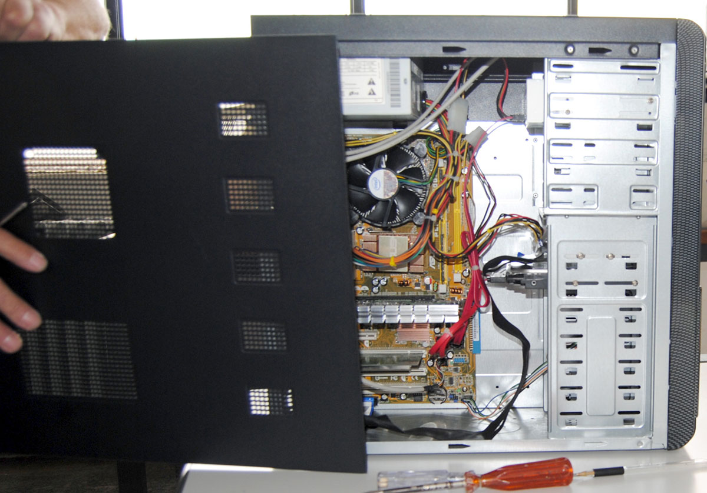
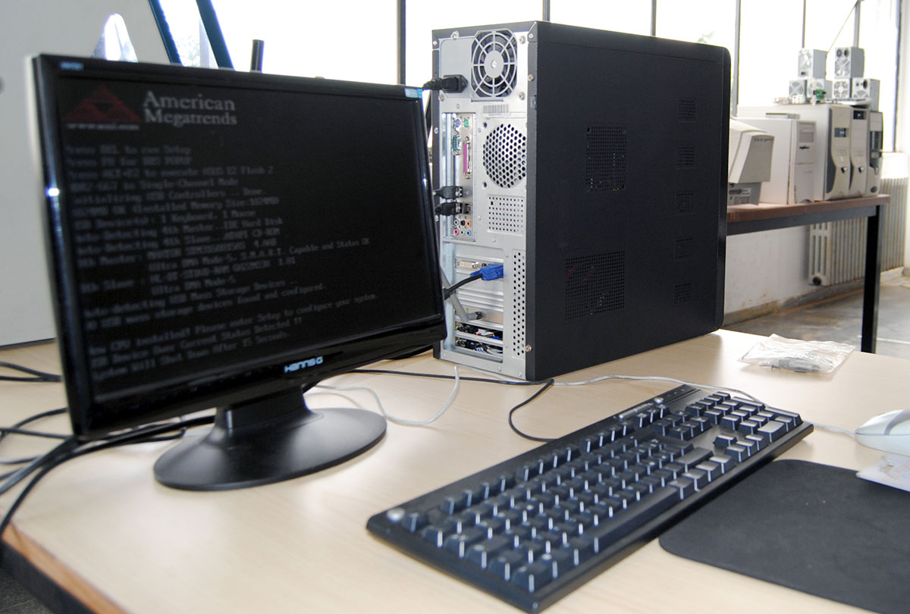

Sistema operativo e fine del montaggio
dopo aver piazzato tutti i componenti all'interno del case, l'ultima cosa che rimane da fare è collegare le periferiche esterne (mouse e tastiera), testare il computer e installare il sistema operativo. Un sistema operativo è un software di base che gestisce le risorse hardware e software della macchina, fornendo servizi di base ai software applicativi.
 